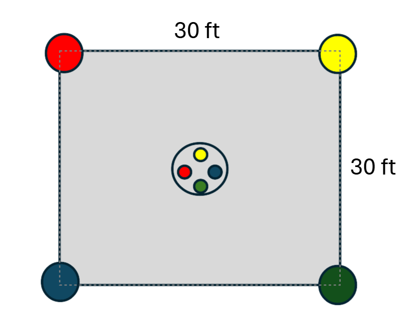
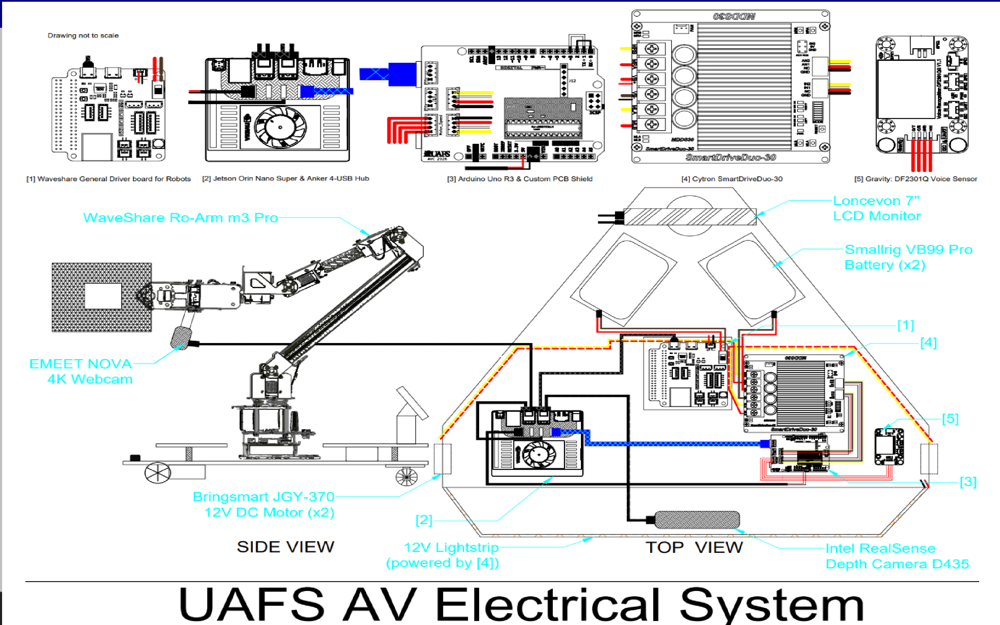
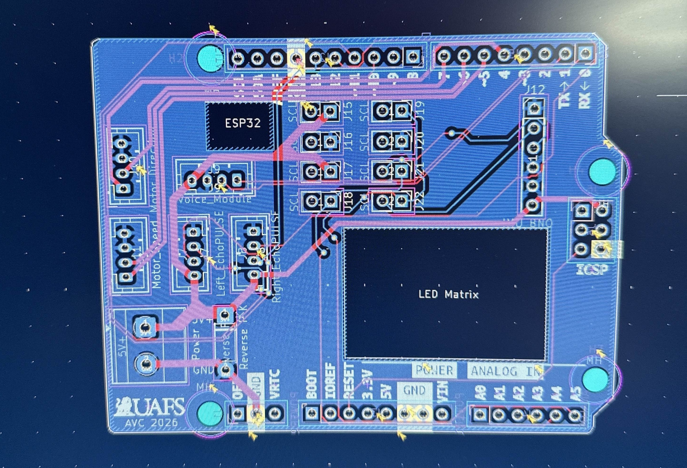
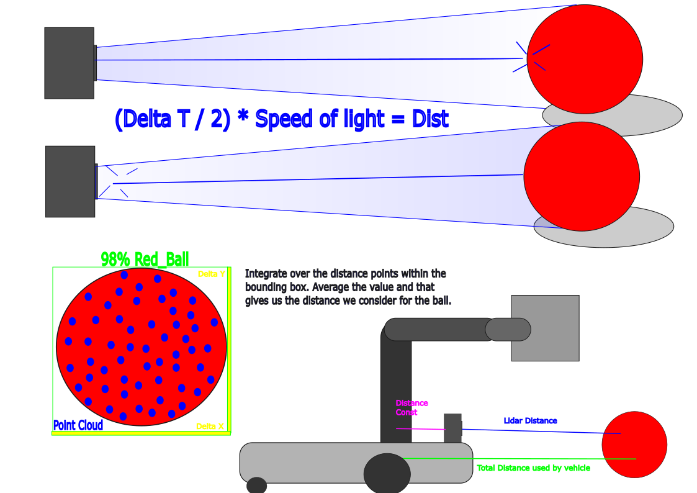
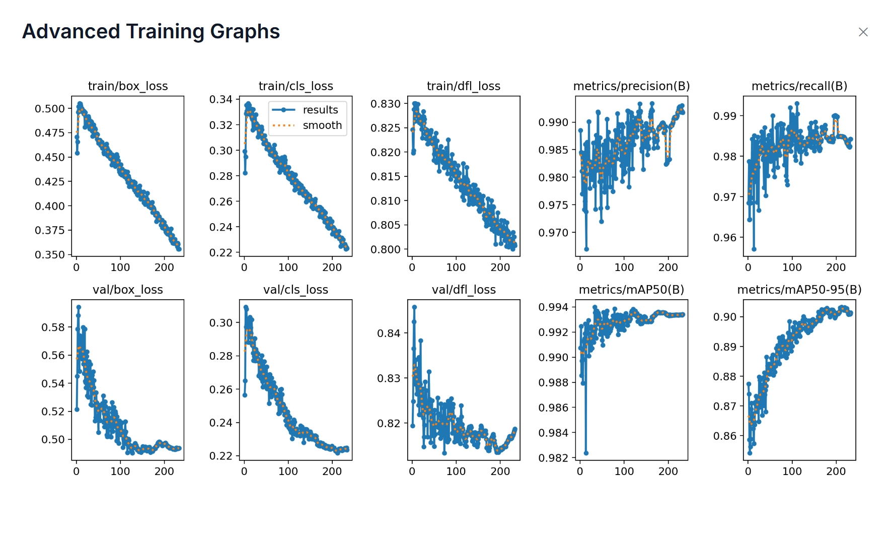
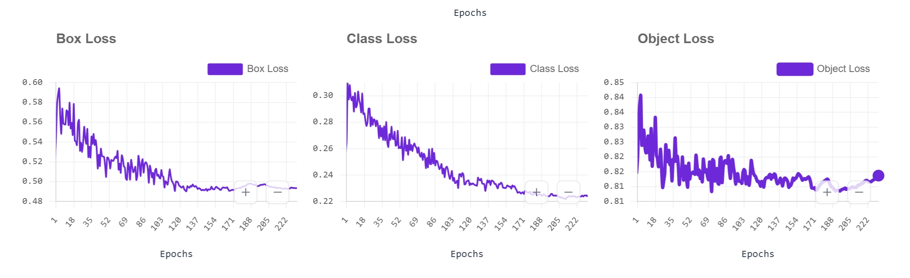
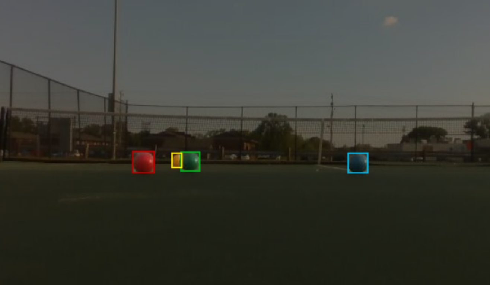
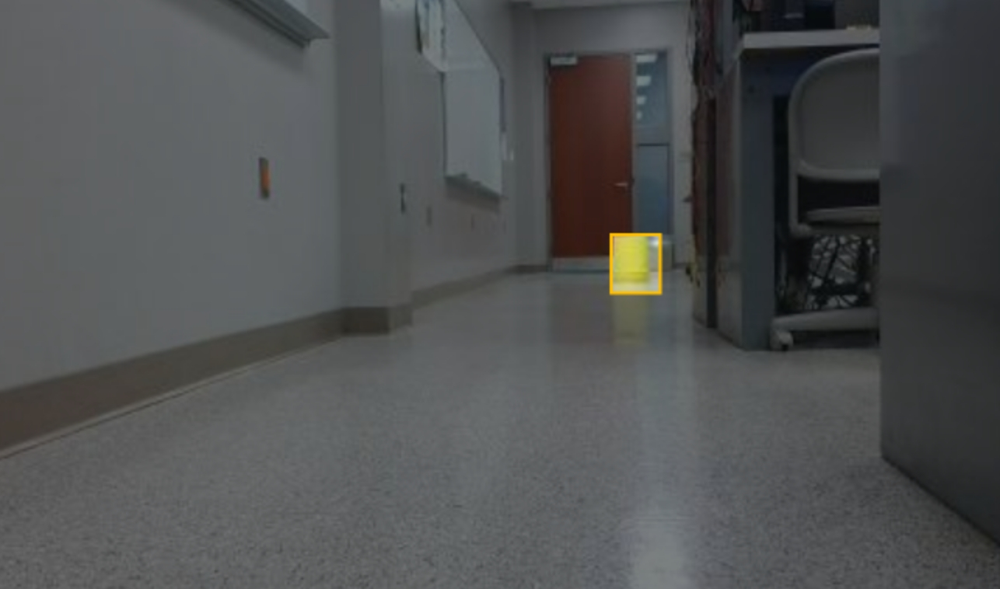
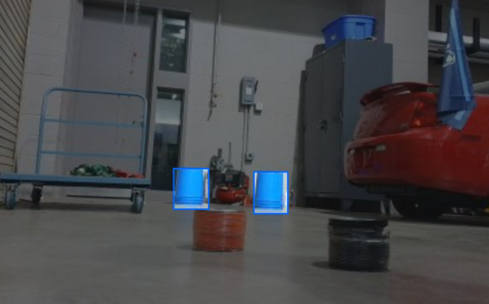

Autonomous Vehicle Challenge
1st Place — 2025-2026 | Custom Robotics & Computer Vision

Project Overview
Our team competed in the statewide Autonomous Vehicle Challenge, securing 2nd place in the 2024-2025 season and taking 1st place in 2025-2026. The competition required the vehicle to navigate a 30ft x 30ft square competition space with a different colored bucket in each corner. In the center of the area is a 2ft radius hula-hoop with 4 different colored balls matching the buckets within it. The goal of the competition is to accumulate the most points by placing all of the balls in the corresponding bucket in a specific order while gaining bonus points for speed.

Electronic Hardware & Custom PCB Design
A major component of our success was the reliable integration of many different electronic systems, including a multi-axis manipulator. To ensure the hardware could withstand the vibrations of the competition floor without wires shaking loose, I designed a custom PCB Hat for the Arduino Uno R3 to handle all sensor integration and power distribution.

System Architecture
The vehicle's computing is divided between a Jetson Orin Nano and an Arduino Uno R3. The Jetson serves as the primary brain, running our custom AI models in Python. Python provided the best development speed for our small team and allowed seamless use of libraries like Ultralytics and OpenCV.
The Uno R3 acts as the real-time polling engine. It acquires data from a 9-axis IMU, DF-Robot voice detection module, ultrasonic sensors, and encoder motors. The SmartDriveDuo 30 Cytron motor driver receives commands from the Uno to drive the motors.
Custom Uno R3 Sensor Hat
To move away from unreliable breadboards, I engineered a custom printed circuit board (PCB) to sit directly on top of the Uno R3. This board serves as the central nervous system for the lower-level hardware.

- Quick Connect Interfaces: Designed custom headers and JST connectors for all environmental sensors (IMU, Ultrasonics), allowing for rapid swapping of broken sensors on competition day without re-wiring.
- Power Distribution: Engineered a dedicated power plane within the PCB to safely step-down and distribute clean, regulated power to the 5v and 3.3v logic sensors, isolating them from the noisy power draw of the drive motors.
- Diagnostic Test Points: Integrated exposed test points across the board, allowing our team to quickly probe logic lines with a multimeter or oscilloscope during active debugging without disconnecting any hardware.
Software & Computer Vision
To navigate the field and score points, the robot needed reliable vision and precise localization across its dual-camera setup.
- Object Detection: Trained a custom YOLO v11 AI model deployed on the NVIDIA Jetson to detect colored balls and buckets in real-time.
- Localization: In the new 2026-2027 Vehicle: Implemented a Monte-Carlo particle filter using an occupancy map to predict and track the robot's pose on the field.
- Telemetry: Built a custom video feed and sensor visualization dashboard to monitor the data stream.
Depth Perception & LiDAR Integration
For accurate spatial awareness and depth perception, we utilized the Intel RealSense 435i camera. This specialized hardware allows the vehicle to map its environment dynamically using LiDAR principles.

The system fundamentally works by firing a laser pulse at a target and measuring the exact time it takes for the beam to reflect off the object and bounce back into the sensor. Since the pulse travels to the object and back, we calculate the precise distance by multiplying the total travel time by the speed of light, and then dividing the result by two:
To turn this raw depth data into actionable driving intelligence, we fused the RealSense output with our computer vision pipeline. When the YOLO v11 model detects an obstacle, it generates a bounding box around it. Our software isolates all the LiDAR depth points strictly within that AI-detected bounding box, integrates across all the collected points, and calculates their average distance. This technique strips out background noise and gives us a single, highly reliable distance metric that we safely use for our navigation and collision-avoidance logic.
Model Performance & Live Detections
Developing a robust vision model was critical to handling the ever-changing lighting conditions and background clutter of the competition arena. The YOLO v11 model was trained on a highly varied custom dataset. Below are the performance metrics demonstrating the model's high precision and recall during validation testing.


Once deployed to the Jetson Orin Nano, the inference pipeline successfully identified and tracked the target objects with minimal latency. Here are examples of the model on test images with considerable distractions and distances. In lab testing, we were able to detect buckets at 60 ft and balls at 30 ft:



Testing & Field Performance
Verifying the accuracy of the IK solver and the object detection model was critical during testing. Below is a video clip of the vehicle successfully identifying, approaching, and picking up a competition ball using our custom robotic arm integration. The vehicle was run in a slower mode with its motors undervolted. This ultra-safe approach was taken as we had unexpected challenges during the competition which required retrofitting a new camera.
AVC Engineering Notebook
Below is the complete engineering notebook we presented at our competition. It goes into much deeper detail regarding the mechanical, electrical, and coding challenges summarized on this page.